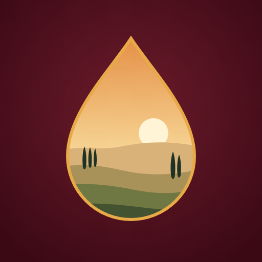

Sorso.
Your Tuscan wine companion
Open SorsoKeep Sorso on your home screen. iPhone: tap Share in Safari, then Add to Home Screen. Android: tap ⋮ in Chrome, then Add to Home screen.
Sorso opens in the Claude app or on claude.ai. Stay signed in to Claude to scan bottles and chat with the sommelier.